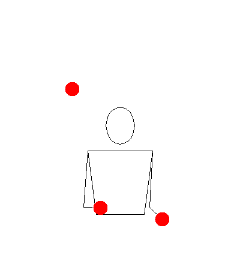
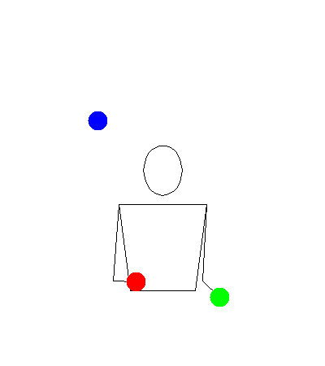
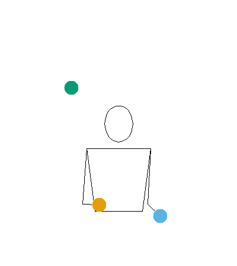
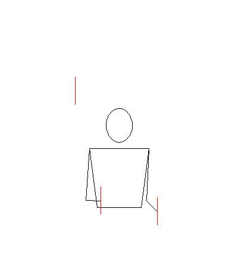
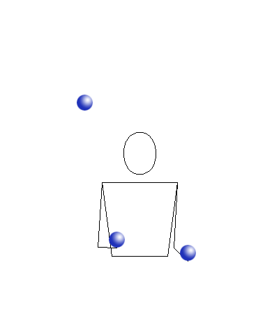
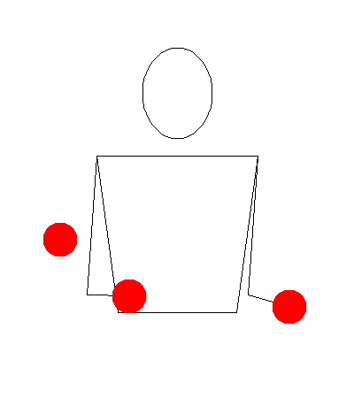
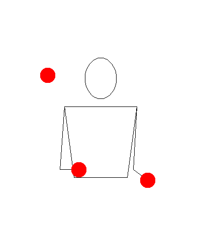

Before you run animate(), know this: it talks to a
server at jugglinglab.org and
downloads a GIF. You need an internet connection. The time it takes
depends on the options you pass and whether JugglingLab has the pattern
cached — typically a few seconds for a simple call, longer when you
specify colours.
What you get back is a full animation of the pattern. For a juggler learning a new trick, or communicating a pattern to someone else, it’s the most informative thing jugglr can produce.
Basic usage
Pass a pattern as a string:
animate("531")
In Positron or RStudio, the animation appears in the Viewer pane. Otherwise it opens in the browser.
You can also pass any Siteswap object directly — jugglr
extracts the sequence string for you:
The animation is identical either way.
One limitation: passingSiteswap objects using fractional
notation (e.g. "<4.5 3 3 | 3 4 3.5>") can’t be
animated because JugglingLab doesn’t recognise that format. P-notation
passing patterns (e.g. "<3p 3|3p 3>") work fine.
Colours
The colors argument is the most visually impactful
option.
No colours specified — JugglingLab uses its default (a single colour):
animate("531")colors = "mixed" — each prop gets a
different colour. Useful for tracking individual balls through the
pattern:
animate("531", colors = "mixed")
colors = "orbits" — props that follow
the same path through the pattern share a colour. This is the most
analytically useful mode: it shows you the orbit structure at a
glance:
animate("531", colors = "orbits")
Custom colours — a vector of R colour names or hex codes, one per prop:

These are the same Okabe-Ito colours used in timeline()
and ladder() — a good choice if you want consistency across
your visualisations.
Note that specifying colours takes noticeably longer than the default, because the coloured version isn’t typically cached on the JugglingLab server.
Props
The default prop is a ball. Rings and an image prop are also available:
animate("531", prop = "ring")
animate("531", prop = "image")
Speed and timing
Two parameters control the animation speed.
slowdown stretches the throw arcs in time — the
JugglingLab default is 2.0. Increase it to slow the
animation down, which is useful when you’re studying a new pattern:
animate("531", slowdown = 4)bps sets the beats per second — the tempo of the
pattern. Increase it to see the pattern at full juggling speed:
animate("531", bps = 8)
width and height control the pixel
dimensions of the animation if you need a specific size.
Saving animations to disk
To embed an animation in an R Markdown or Quarto document, save it to disk first and then reference the file:
animate("531", path = "figures/531.gif", colors = "orbits")Then in a separate chunk:
knitr::include_graphics("figures/531.gif")Set display options via chunk arguments:
out.width = "40%" keeps the GIF from filling the full page
width. This is the approach used throughout this vignette.
Advanced parameters
animate() passes additional named arguments through to
JugglingLab. A few worth knowing:
-
gravity: the default feels like Earth. Setgravity = 700for a pattern that looks like it’s being juggled somewhere with lower gravity:
animate("531", gravity = 700)
-
propdiam: prop diameter in metres. Adjust if the props look too large or small relative to the juggler. -
camangle: camera angle in degrees around the vertical axis. Useful for a different perspective on the pattern. -
showground: set totrueto show the ground plane.
The full list of parameters is documented in the JugglingLab GIF server reference.